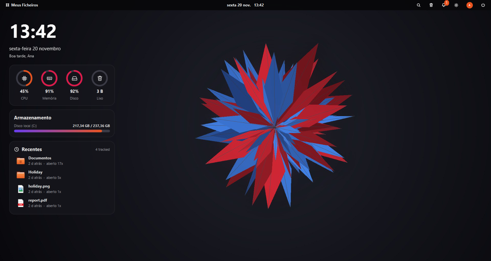
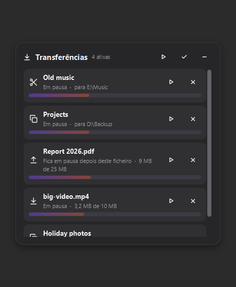

O ambiente de trabalho
O FileExp abre um ambiente de trabalho em ecrã inteiro dedicado aos ficheiros. Tudo — menus, diálogos, pré-visualizações — é desenhado dentro desta única janela, com o mesmo tema, por isso nada abre por cima com um estilo diferente.

Barra superior#
| Elemento | O que faz |
|---|---|
| Meus Ficheiros | Abre o explorador de ficheiros (também Ctrl+Space). |
| Relógio e data | Clique para abrir um calendário. |
| Pesquisa | Abre Meus Ficheiros com o cursor na caixa de pesquisa. |
| Lixo | Abre o Lixo. |
| Sino | Notificações, com um contador das novas. |
| Roda dentada | Definições (também Ctrl+,). |
| Avatar | A sua conta, favoritos, bloquear e sair. |
| Energia | Bloquear (Ctrl+Alt+L), ecrã inteiro (F11) e sair. |
Widgets#
À esquerda do ambiente de trabalho:
- Relógio com a data e uma saudação;
- anéis para CPU, memória, disco e Lixo, com valores reais;
- armazenamento de cada unidade com uma barra de utilização;
- ficheiros e pastas recentes.
O estilo dos widgets — Vidro, Sólido, Minimalista, Contorno ou Cor de destaque — escolhe-se em Definições › Ambiente de trabalho, com pré-visualização.
Notificações#
As operações que demoram ou que pode querer anular terminam com um aviso no canto superior direito. Muitos avisos têm um botão Anular, por exemplo depois de eliminar, mudar o nome ou de uma movimentação feita por uma automação; depois de uma transferência, é oferecido Abrir ou Mostrar no painel de transferências. As notificações mais antigas ficam na lista por baixo do sino.
Painel de transferências#
Cópias, transferências, envios, cópias de segurança e ficheiros recebidos de computadores próximos passam pelo painel de transferências no canto inferior direito. Cada transferência mostra o progresso em bytes, a velocidade e o tempo restante, e pode ser cancelada. O painel pode ser minimizado; quando uma transferência termina, recebe Abrir ou Mostrar e uma notificação.
Pausar e retomar (desde a 3.10). Cada transferência por terminar tem um botão Pausa ao lado de Cancelar, que passa a Retomar. Uma transferência em pausa guarda o que já fez (uma cópia grande continua do mesmo byte), e uma que ainda não tinha começado mantém o seu lugar na fila. Algumas só param num ponto seguro: um envio para a nuvem diz "Fica em pausa depois deste ficheiro". Com mais de uma transferência, o botão no topo pausa ou retoma todas.

Ecrã de bloqueio#
Ctrl+Alt+L (ou o menu de energia) mostra o ecrã de bloqueio: uma imagem de fundo desfocada, o relógio e o seu avatar. Clique, ou carregue em Enter ou Espaço, para voltar.
Ecrã inteiro e sair#
F11 liga e desliga o ecrã inteiro. Para sair, use o menu de energia › Sair; o FileExp pede confirmação e fecha o cofre se estiver aberto.